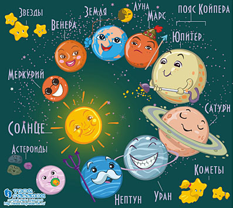
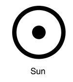

Главная
Солнечная система — планетная система, включающая в себя центральную звезду — Солнце — и все естественные космические объекты, обращающиеся вокруг Солнца. Она сформировалась путём гравитационного сжатия газопылевого облака примерно 4,57 млрд лет назад. Большая часть массы объектов Солнечной системы приходится на Солнце; остальная часть содержится в восьми относительно уединённых планетах, имеющих почти  круговые орбиты и располагающихся в пределах почти плоского диска — плоскости эклиптики. Общая масса системы составляет около 1,0014 M.
{kind=link}
Четыре меньшие внутренние планеты: Меркурий, Венера, Земля и Марс (также называемые планетами земной группы), состоят в основном из силикатов и металлов. Четыре внешние планеты: Юпитер, Сатурн, Уран и Нептун, также называемые газовыми гигантами, намного более массивны, чем планеты земной группы. Крупнейшие планеты Солнечной системы, Юпитер и Сатурн, состоят, главным образом из водорода и гелия; внешние, меньшие Уран и Нептун, помимо водорода и гелия, содержат в своём составе метан и угарный газ. Такие планеты выделяются в отдельный класс «ледяных гигантов». Шесть планет из восьми и три карликовые планеты имеют естественные спутники. Каждая из внешних планет окружена кольцами пыли и других частиц.
 В Солнечной системе существуют две области, заполненные малыми телами. Пояс астероидов, находящийся между Марсом и Юпитером, сходен по составу с планетами земной группы, поскольку состоит из силикатов и металлов. Крупнейшими объектами пояса астероидов являются Церера, Паллада, Веста и Гигея. За орбитой Нептуна располагаются транснептуновые объекты, состоящие из замёрзшей воды, аммиака и метана, крупнейшими из которых являются Плутон, Седна, Хаумеа, Макемаке, Квавар, Орк и Эрида. В Солнечной системе существуют и другие популяции малых тел, такие как планетные квазиспутники и троянцы, околоземные астероиды, кентавры, дамоклоиды, а также перемещающиеся по системе кометы, метеороиды и космическая пыль.
{kind=link}
Солнечный ветер (поток плазмы от Солнца) создаёт пузырь в межзвёздной среде, называемый гелиосферой, который простирается до края рассеянного диска. Гипотетическое облако Оорта, служащее источником долгопериодических комет, может простираться на расстояние примерно в тысячу раз дальше гелиосферы. Солнечная система входит в состав галактики Млечный Путь.